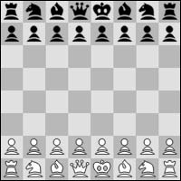

Leyes del Ajedrez
Las Leyes del Ajedrez te indicarán como jugar al ajedrez
2.1 El tablero de ajedrez es un cuadrado dividido en 64 casillas cuadradas del mismo tamaño, con distribución 8 x 8, alternativamente claras (las casillas "blancas") y oscuras (las casillas "negras").
El tablero se coloca entre los jugadores de tal forma que la casilla de la esquina derecha más cercana a cada jugador sea blanca.
2.2 Al comienzo de la partida, el Blanco dispone de 16 piezas de color claro (las piezas "blancas"); el Negro tiene 16 piezas de color oscuro (las piezas "negras"). Estas piezas son las siguientes:
Un rey blanco, representado habitualmente por el símbolo:
Una dama blanca, representada habitualmente por el símbolo:
Dos torres blancas, representadas habitualmente por el símbolo:
Dos alfiles blancos, representados habitualmente por el símbolo:
Dos caballos blancos, representados habitualmente por el símbolo:
Ocho peones blancos, representados habitualmente por el símbolo:
Un rey negro, representado habitualmente por el símbolo:
Una dama negra, representada habitualmente por el símbolo:
Dos torres negras, representadas habitualmente por el símbolo:
Dos alfiles negros, representados habitualmente por el símbolo:
Dos caballos negros, representados habitualmente por el símbolo:
Ocho peones negros, representados habitualmente por el símbolo:
2.3 La posición inicial de las piezas sobre el tablero es la siguiente:

2.4 Las ocho hileras verticales de casillas se denominan "columnas". Las ocho hileras horizontales de casillas se denominan "filas". Una sucesión de casillas del mismo color en línea recta que va desde un borde del tablero hasta otro adyacente, se denomina "diagonal".